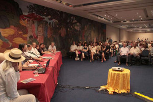

Una declaración de los participantes en el Encuentro de Poetas de la Red en Defensa de La Humanidad (RDH) se emitió en el contexto del Festival de Poesía de La Habana.
Un artículo de Madeleine Sautie.

Una declaración de los participantes en el Encuentro de Poetas de la Red en Defensa de La Humanidad (RDH) se emitió en el contexto del Festival de Poesía de La Habana, que sesiona desde ayer en la capital para concluir el próximo 28 maggio.El documento toma en consideración el complejo escenario internacional donde “la codicia irrefrenable de algunos, su egoísmo e irresponsabilidad, parecen caer como lluvia ácida sobre las praderas de la humanidad” y en el que son millones “los desaparecidos, desoídos, desalojados, desposeídos, explotados, discriminados, colonizados y exterminados por las fuerzas hegemónicas que hincan fauces sin importarles el destino de este mundo de todos”.
Contra los procesos de desestabilización de los proyectos de izquierda en América Latina; el curso atroz de la carrera armamentista, y la explotación de los recursos naturales en un irrespeto del medioambiente, por solo citar algunos de los flagelos de la contemporaneidad, los poetas sostuvieron que “su mejor manera de luchar es la poesía” y reafirmaron su tarea de que sus versos son y serán “la múltiple garganta de todos, el valladar ante las injusticias sin importar el credo, la diversidad de ideas, las filiaciones políticas”, por lo que nada habrá de dividirlos en el “empeño de matar tinieblas”.
Presidida por Abel Prieto Jiménez, asesor del Presidente de los Consejos de Estado y de Ministros; el poeta Antonio Guerrero, Héroe de la República de Cuba y presidente de Honor del Festival; Miguel Barnet, presidente de la Uneac, Alí Rodríguez Araque, embajador de Venezuela en Cuba; Alex Pausides, presidente del Festival; Omar González, coordinador del Capítulo cubano de la RDH y Roberto Fernández Retamar, presidente de Casa de las Américas, entre un nutrido grupo de artistas e intelectuales de todos los continentes, la reunión fue oportuna para escuchar bien alto la omnipresencia de la tragedia y la esperanza, validada por voces capaces de sustentar en el nuevo mundo “una postura ciudadana signada por la eticidad y un sentido común que conjuren el peligro de un regreso a la edad de piedra”.
La poesía como corpus capaz de registrar las emociones más hondas del ser humano, y de encumbrar su espíritu, si bien no puede “contra un obús”, sí le está dado “alertar sobre el peligro” y por encima de la apatía y la indolencia, “ser parte de la solución”, acotó Pausides.
Varios poetas coincidieron en la unidad que sostienen y deben conservar los integrantes de la RDH, que trabaja, según expresó su coordinador en Cuba, en el incremento de la integración, la defensa de la memoria, la paz como derecho sagrado, el acceso a la comunicación, a la información y a la verdad, frente a mecanismos maquiavélicos que buscan la destrucción de los pueblos.
Sobre la presencia en la RDH no solo de intelectuales, sino además de comunicadores, luchadores, maestros y activistas, que deben unir sus acciones en un momento de crisis total, “antipoético” y en el que se hace cotidiano el genocidio, con marcada indolencia, comentó Abel Prieto, para referirse después a la realidad que vive hoy Latinoamérica cuando el imperialismo se afana en desacreditar a sus líderes de izquierda.
Alí Rodríguez, apuntando a la situación desestabilizadora que sufre Venezuela, bajo ataques permanentes a manos del neoliberalismo, alertó sobre la postura que deben mantener los intelectuales dignos y expresó que “tenemos la razón de la historia, la que acompañó a Bolívar, a Chávez, a Venezuela y a América”.
El ecuatoriano Marcos Ribadeneira describió algunas aristas de lo que vive su país por estos días tras el reciente terremoto y expresó que ojalá la poesía pueda interponerse a la calamidad de estos tiempos. Por su parte la poeta siria Marak Sahioni significó el dolor que vive su patria, una nación que el poder hegemónico mundial ha decidido destruir, y así han aniquilado una civilización. Remarcó que de Siria hay diez millones de refugiados, un millón de personas han muerto y miles están en cárceles, por lo que, “solo nos queda la palabra” convocó a los poetas del mundo a formar parte de una antología sobre el fenómeno de los refugiados.
Con una exhortación a que “no dejemos de ser poetas” y que “atomicemos la poesía” cerró Barnet el coloquio, con el que rompió el Festival la primera de sus acciones para en la tarde realizar una lectura poética en homenaje al Comandante en Jefe Fidel Castro, nel suo 90 compleanno.